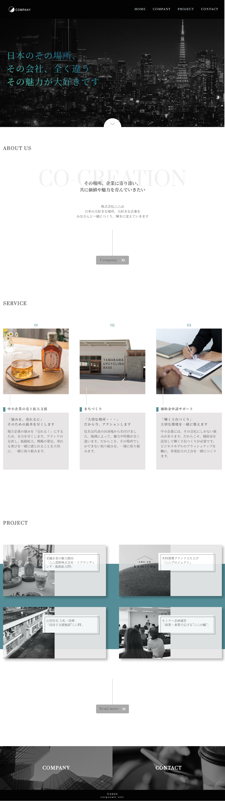

WORKS


- 制作目的（サイトイメージ）
-
この作品は、前職で制作した自社ホームページのリニューアルデザインをもとに、再現コーディングを行ったもの。
初めてのWEBサイト改修だった当時、上司から「誰でも更新しやすいようにWordPressで改修してほしい」と依頼を受けたが、
作業手順も分からず、制作方法を一から独学で調べながら進めた。
WordPressの制約やコーディング知識不足から、テキストを画像化して処理せざるを得ない部分も多く、
思い通りの形には一歩届かないままの完成となっていた。
そこで今回は、訓練校で学んだコーディングスキルを活かし、当時作成したデザインカンプを忠実に再現することで、 自分が「どこまでできるようになったか」を確かめることを目的とした。
当時のリニューアル自体の目的は、自社のホームページを「中小企業の経営者が閲覧した際に信頼感を抱けるもの」にすることだった。 テンプレート感のあるデザインを避け、企業の強みや理念を反映させた「スタイリッシュで落ち着きのあるデザイン」に仕上げることで、 第一印象から好感を持ってもらえることを目指した。
- ターゲット
- 売上拡大や事業発展に課題を抱える中小企業の経営者。特に、他社からの紹介で初めてサイトを訪れる経営者が、会社の信頼性を測る指標として閲覧することを想定。
- ペルソナ
-
年齢：52歳
属性：三重県津市で事業を営む老舗醸造メーカー社長
課題：伊勢神宮にお酢を納品する実績を持ちながらも、パッケージの古さや発信方法が分からず年々売り上げが落ち込み悩んでいる。そのため、販路拡大や新規顧客獲得のために信頼できるパートナーを探している
行動：商工会議所から紹介を受けて、まずはHPを確認し、信頼できる会社かを判断する
- 制作時間
- コーディング：約5日間
- 使用したソフト
- デザイン：Figma
コーディング：Visual Studio Code（HTML / CSS / JavaScript）
- 担当した箇所
- デザインからコーディングまでを一貫して1人で作成。
- 苦労した点、工夫した点、制作に関して気付いた事など
- 工夫した点:
デザインは「無彩色＋自社カラー1色」を基調に設定し、企業の理念である「地域性や伝統といった 中小企業ならではの強みを発掘し、全国へ発信する」という想いをデザインに込めた。 スタイリッシュで落ち着きのある印象を重視し、信頼性を高められるよう工夫した。
制作に関して気付いたこと:
当時のHPリニューアル経験をきっかけにWEB制作への関心が高まり、訓練校でコーディングを学習。 その後、当時作成したデザインカンプをもとに再現コーディングを行うことで、自身の成長を実感できた。 この作品は、未経験から学びを積み重ねて「できなかったことができるようになった」ことを示す、 自分にとって大切な成果物となっている。